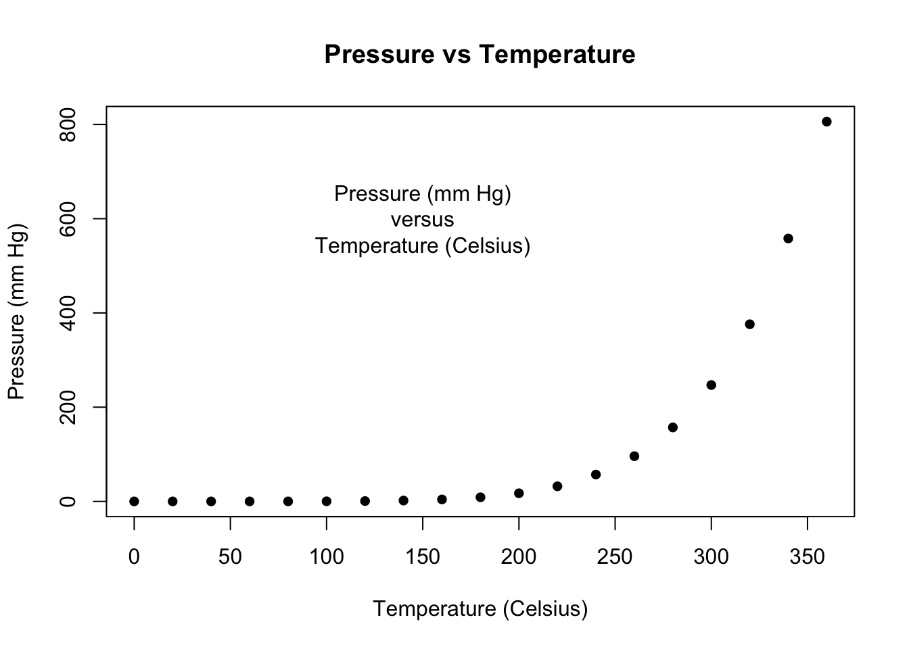
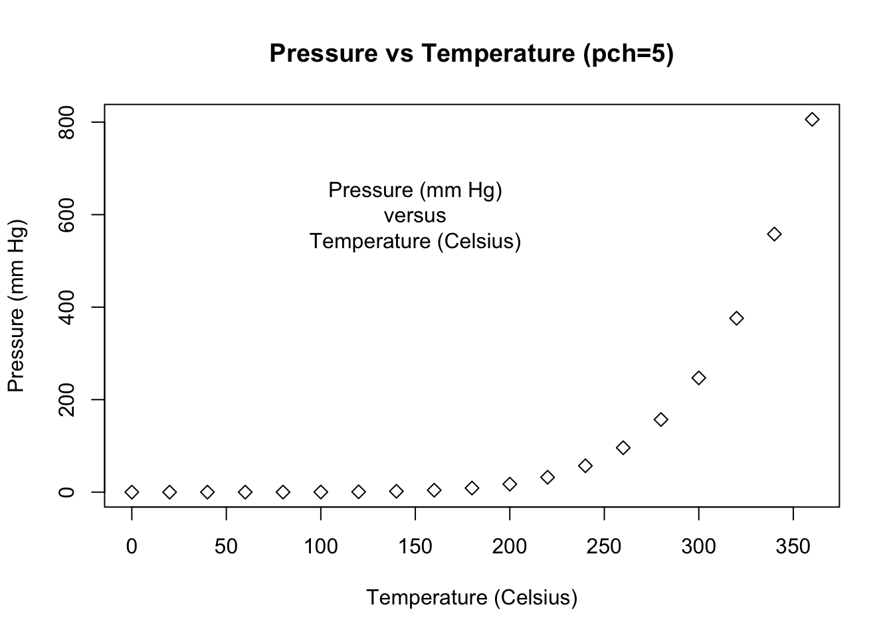

# Start plotting from basics
plot(pressure, pch = 16,
xlab = "Temperature (Celsius)",
ylab = "Pressure (mm Hg)",
main = "Pressure vs Temperature")
text(150, 600, "Pressure (mm Hg)\nversus\nTemperature (Celsius)")
plot(pressure, pch = 5,
xlab = "Temperature (Celsius)",
ylab = "Pressure (mm Hg)",
main = "Pressure vs Temperature (pch=5)")
text(150, 600, "Pressure (mm Hg)\nversus\nTemperature (Celsius)")